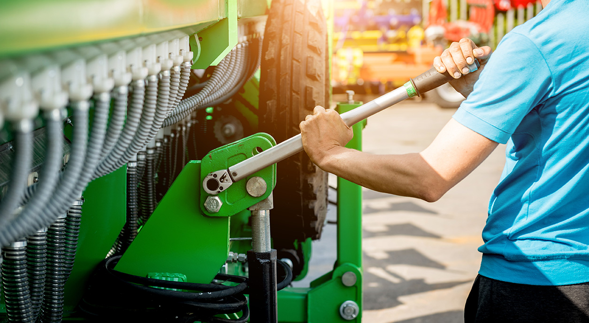
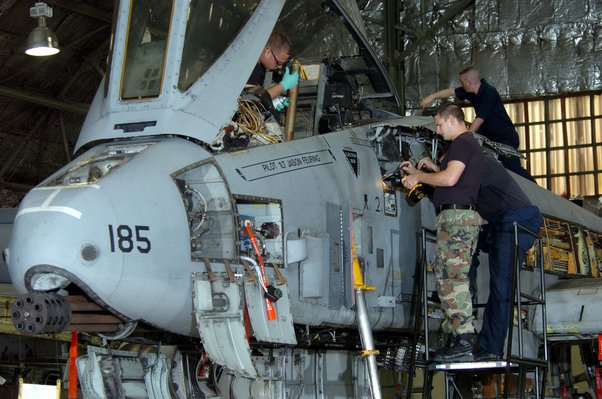

<!DOCTYPE html>
<html lang="en">
<head>
    <meta charset="UTF-8">
    <title>Title</title>
</head>
<body>

</body>
</html>
<!DOCTYPE html>
<html lang="en">
<head>
    <meta charset="UTF-8">
    <meta name="viewport" content="width=device-width, initial-scale=1.0">
    <title>Ag Mechanic - Home</title>
    <style>
        body {
            font-family: 'Arial', sans-serif;
            background-color: cadetblue;
            margin: 0;
            padding: 0;
            color:black;
        }
        header {
            background-color:steelblue; /* Bright blue for visibility, change as needed */
            color: white;
            padding: 20px;
            text-align: center;
        }
        nav ul {
            list-style-type: none;
            padding: 0;
        }
        nav ul li {
            display: inline;
            margin-right: 10px;
        }
        nav ul li a {
            color: white;
            text-decoration: none;
        }
        a:hover {
            text-decoration: underline;
        }
        section {
            margin: 20px;
            padding: 20px;
            background-color: white;
            border-radius: 8px;
        }
        footer {
            text-align: center;
            padding: 20px;
            background-color:floralwhite; /* Matching the header */
            color: white;
        }
    </style>
</head>
<body>
<header>
    <h1>Ag Mechanic</h1>
    <nav>
        <ul>
            <li><a href="#overview">Overview</a></li>
            <li><a href="#projects">Projects</a></li>
            <li><a href="#resources">Resources</a></li>
            <li><a href="#about">Contact</a></li>
        </ul>
    </nav>
</header>
<section id="overview">

    <h2>About Trade</h2>
    <p>Agricultural mechanics focuses on the repair, maintenance, and design of agricultural machines, including tractors, plows, combines, and other equipment. It aims to ensure optimal performance and efficiency in the farming process.</p>
    </section>

<section id="projects">
    <h2>Projects and Achievements</h2>
    <p>Repairing and maintaining large machinery, such as tractors and harvesters
        Diagnosing and fixing machine component issues
        Conducting preventative maintenance to ensure optimal operation
        Design and build new agricultural machinery or components
        Develop plans for improving farm efficiency
        Participate in machinery competitions to demonstrate skills and knowledge.</p>

    </section>

<section id="resources">
    <h2>Learning Resources</h2>
    <p>Tools and equipment (e.g., hand tools, measuring instruments, electrical test equipment, vehicle hoists)
        Specialized workshops and laboratories for hands-on learning
        Textbooks, manuals, and online resources for education and development.</p>

    </section>

<section id="about">
    <h2>About me</h2>
    <p>My name is Naya Arreola, and I am a 7th grader. The trade I did is Agricultural Mechanics, Why did I choose it? I chose it because its a very intresting trade and you get to fix tractors and help farmers. Why I also picked Ag mechanics is because I want to become an Airforce mechanic,and I think doing Ag mechanics is a good start.</p>

    </section>

<footer>
    <p>© 2024 Your CTE Program Name Here. All rights reserved.</p>
</footer>
</body>
</html>
